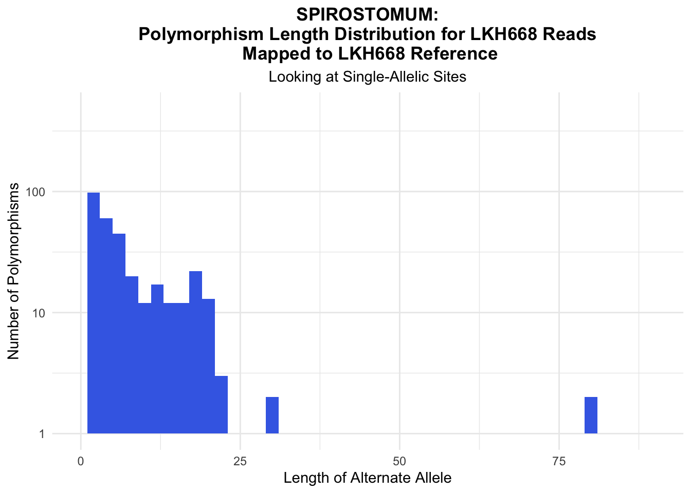

First, we’ll need to load the needed libraries and read the vcf data in as a vcfR object. For the plots, we will want to work with the vcf as a data frame, so we can use the function vcfR2tidy to extract the tidy data frame from the vcfR object.
#file path to vcf
spirostomum_file_668_to_668 <- "./Spirostomum/mappedto668/LKH668_FPE_q24_minlen125.fastq.gz_LKH668_Filtered.UC.Final.NTD.ORF.fasta_deduped_filtered.vcf.recode.vcf"
#create vcfR object
spirostomum_vcfR_668_to_668 <- read.vcfR(spirostomum_file_668_to_668)
#extract tidy data frame
spirostomum_668_to_668 <- vcfR2tidy(spirostomum_vcfR_668_to_668,
single_frame = TRUE,
info_types = TRUE,
format_types = TRUE)[["dat"]]The following functions can be used to better understand the vcf file you’re analyzing.
#find number of polymorphisms per contig, then graph the distribution of the number of polymorphisms per contig
#takes tidy vcf data and optional arguments for title and fill
graph_poly_per_contig <- function(data,
my_title = "Polymorphisms per Contig",
fill = "#505D83") {
data %>%
group_by(CHROM) %>%
summarize(num_poly = n()) %>%
ggplot(aes(x = num_poly)) +
geom_histogram(binwidth = 1, fill = fill) +
theme_minimal() +
labs(title = my_title,
x = "Number of Polymorphisms",
y = "Number of Contigs") +
theme(plot.title = element_text(face = "bold", hjust = .5))
}
#graph read depth distribution
#takes tidy vcf data and optional arguments for title, x limits, ylimits, and fill
graph_depth <- function(data,
my_title = "Depth Distribution",
xlimits = c(0, 10000),
fill = "#505D83",
ylimits = NULL) {
data %>% ggplot(aes(x = DP)) +
scale_y_log10(limits = ylimits) +
geom_histogram(binwidth = 500, fill = fill) +
scale_x_continuous(labels = comma,
limits = xlimits) +
labs(title = my_title,
x = "Read Depth",
y = "Number of Polymorphisms") +
theme_minimal() +
theme(plot.title = element_text(hjust = .5, face = "bold"))
}
#graph allele balance distribution
#takes tidy vcf data and optional argument for title, fill, and limits
graph_allele_balance <- function(data,
my_title = "Allele Balance Distribution",
fill = "#505D83",
xlimits = NULL) {
data %>% ggplot(aes(x = as.numeric(AB))) +
geom_histogram(binwidth = .05, fill = fill) +
scale_x_continuous(breaks = c(0, .25, .5, .75, 1),
labels = c("0", ".25", ".5", ".75", "1"), limits = xlimits) +
labs(title = my_title,
x = "Allele Balance",
y = "Number of Polymorphisms") +
theme_minimal() +
theme(plot.title = element_text(hjust = .5, face = "bold"))
}
#graph length distribution of the alternate allele
#takes tidy vcf data and optional argument for title and fill
graph_length_distribution <- function(data,
my_title = "Length Distribution",
fill = "#505D83"){
data %>%
filter(str_detect(ALT, ",") == FALSE) %>%
mutate(length_alt = nchar(ALT)) %>%
ggplot() +
geom_histogram(aes(x = length_alt), binwidth = 2, fill = fill) +
scale_y_log10() +
theme_minimal() +
labs(title = my_title,
subtitle = "Looking at Single-Allelic Sites",
x = "Length of Alternate Allele",
y = "Number of Polymorphisms") +
theme(plot.title = element_text(hjust = .5, face = "bold"),
plot.subtitle = element_text(hjust = .5))
}Here are example calls to the functions.
graph_poly_per_contig(spirostomum_668_to_668, "SPIROSTOMUM:\nPolymorphisms per Contig for LKH668 Reads\n Mapped to LKH668 Reference", fill = "#426DE6") + ylim(limits = c(0,160)) + xlim(limits = c(0,80))graph_depth(spirostomum_668_to_668, "SPIROSTOMUM:\nRead Depth Distribution for LKH668 Reads\n Mapped to LKH668 Reference", fill = "#426DE6") + xlim(limits = c(0, 6000))graph_length_distribution(spirostomum_668_to_668, "SPIROSTOMUM:\nPolymorphism Length Distribution for LKH668 Reads\n Mapped to LKH668 Reference", fill = "#426DE6") +
xlim(0, 90)
graph_allele_balance(spirostomum_668_to_668, "SPIROSTOMUM:\nAllele Balance Distribution for LKH668 Reads\n Mapped to LKH668 Reference", fill = "#426DE6")